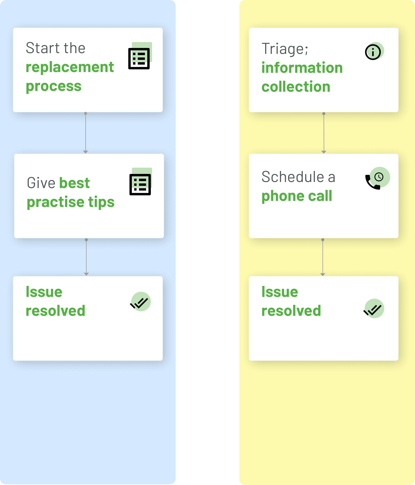

Diabetes Design Initiative
Collaborating with UCSD Design Lab
Collaborating with UCSD Design Lab
I‘m currently working as a research assistant in the Diabetes Design Initiative, a program which organized by UC San Diego Design lab and medical equipment company Dexcom to improve and modify diabetes management tools. Since my work is under NDA, I would like to share my experience in conducting user research at a high level.
Role: UX research, visual design
By Daokai Lin, Emilia Pokta, Daman Heer
Tools: Adobe XD, Figma, Photoshop
The Diabetes Design Initiative(DDI) aims to envision and facilitate the development of better technology for people with diabetes. We spent two quarters working on a handful of specific design problems around Continuous Glucose Monitoring (CGM).
We utilize human-centered design process and various tools to examine the requirements and issues of CGMs and other wearable devices. Based on user needs and Dexcom's plans, we iteratively create, revise, and design new features on CGM mobile app.
The overwhelming amount of user inquiries that the Dexcom company received every day indicated a recurring issue: it was challenging for users to use the CGM app to monitor their glucose as well as address medical treatment effectively. Given this, how might we streamline the interaction process to reduce frustration and confusion when users use the CGM app?
Under the supervision of UC San Diego Lab, we use the knowledge of interaction design and cognitive science to develope the diabetes management tools:
Conducted face to face interviews to understand users' common problems and their using habits
Focused on mapping out the workflow of all the possible use cases; Created a detailed diagram that answers each unique users’ needs that could be automated on their Dexcom app.
Developed high-fidelity prototypes to illustrate our research findings.
Shared the final results and thoughts to the marketing and design teams at Dexcom, incorporated feedback from Design Lab faculty and Dexcom stakeholders.